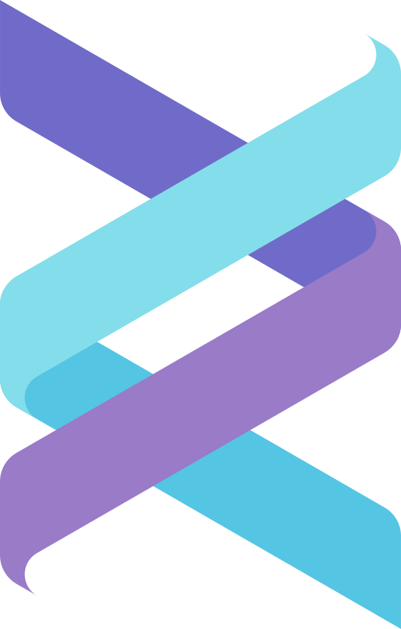
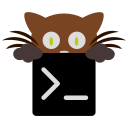

karazuri
A color theme for editors, coding agents, and terminals. Pick an ink and the whole page is printed in it.
tides.tsTypeScript (day) { cached = cache.(day); (cached) cached; data = (day); cache.(day, data, ); data;} collections text = words = (text.())(words.()) (raw: &) -> <> { f: = raw.().()?; offset = f - ; (offset * / )} health (w http., _ *http.) { w.(http.)}vim.opt. = vim.opt. = vim.cmd.() route, (*) trips ferry_log route trips ;Cache the tide forecast for five minutes.
tides.test.ts npm test -- tides- fetches today’s forecast
- reuses cached tides
- expires after five minutes
Install Umi
Find your tool
No matching tools. Try a different name.
Editors
 NeovimInstall guide
NeovimInstall guideVS CodeInstall
Run Extensions: Install from VSIX… from the Command Palette, then choose a karazuri variant.
Install guide CursorInstall
CursorInstallRun Extensions: Install from VSIX… from the Command Palette, then choose a karazuri variant.
Install guide VSCodiumInstall
VSCodiumInstallRun Extensions: Install from VSIX… from the Command Palette, then choose a karazuri variant.
Install guide ZedInstall
ZedInstallCopy the theme file to ~/.config/zed/themes/ on macOS or Linux. Restart Zed and open the theme selector.
Install guideJetBrains IDEsInstall
In IntelliJ Platform 2024.3 or later, open Settings → Plugins → Install Plugin from Disk…, select the JAR, and restart if prompted.
Install guide
HelixInstall guide Sublime TextInstall guide
Sublime TextInstall guide
Agents
T3 CodeInstall
Copy a theme file to ~/.t3/userdata/themes/ and select it in Settings. Both themes use Kami in light mode.
Install guide Codex CLIInstall
Codex CLIInstallCopy the file into the themes directory under CODEX_HOME (defaults to ~/.codex), then run /theme. Set the same variant in your terminal to match the rest of the session.
Install guide Claude CodeInstall
Claude CodeInstallCopy the file into ~/.claude/themes/ and choose it with /theme. Set your terminal to the same variant for the background.
Install guide PiInstall
PiInstallCopy the file into ~/.pi/agent/themes/, restart or run /reload, then pick Theme in /settings. Your terminal supplies the session background.
Install guide
Terminals & CLI
 GhosttyInstall guide
GhosttyInstall guide
kittyInstall guide WezTermInstall guide
WezTermInstall guide- AlacrittyInstall guide
- iTerm2Install guide
 Windows TerminalInstall
Windows TerminalInstallPut karazuri.json in the karazuri folder under %LOCALAPPDATA%\Microsoft\Windows Terminal\Fragments. Restart Windows Terminal and choose a Color scheme under a profile’s Appearance.
Install guide tmuxInstall guide
tmuxInstall guide deltaInstall guide
deltaInstall guide
Color palette
Hover a swatch to see where it shows up, or select it to copy its hex value. Contrast ratios use the editor background of the selected variant. Palette source
// Tide tables for the bay, refreshed hourly.import { Tide } from "./tides";export class Harbor { #tides = new Map<Date, Tide>(); readonly depth = 12.5; depth = 12; forecast(day: Date, fresh = false) { if (!fresh && this.#tides.has(day)) {has(key: Date): boolean return this.#tides.get(day); } const url = `/tides?d=${day}`; ● 'url' is never read throw new Error("offline"); }}